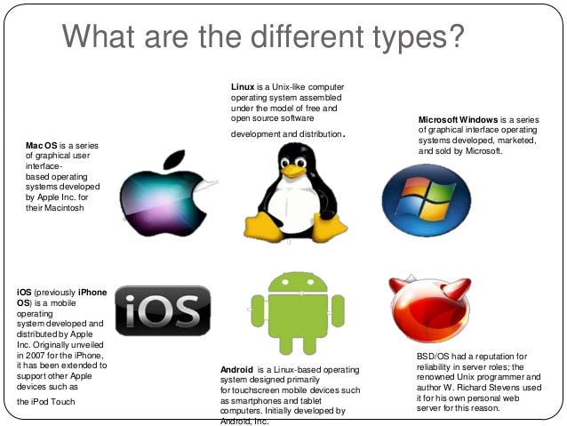

Operating Systems
Home
Operating Systems
Programming Languages
Viruses

What an Operating System Does
- Manages hardware resources: CPU, memory, storage, devices
- Runs & schedules processes/threads for multitasking
- Handles memory: virtual memory, paging, protection
- Provides files system & permissions
- Controls devices via drivers
- System calls & APIs for apps to interact with hardware
- Offers user interfaces: GUIs (Windows/macOS)
- Security: users/group, authentication, updates
What is an Operating System Used For?
- Platform for application programs: provides the environment on which apps run.
- Managing I/O and resources: coordinates memory, display/monitor, keyboard, printer, storage, and other devices.
Types and Examples
- Desktop/Laptop: Windows (GUI-based, PC), macOS (Macintosh—MacBook, iMac), GNU/Linux (Ubuntu, Fedora).
- Mobile: Android (Google’s OS for smartphones/tablets/smartwatches), iOS (Apple’s OS for iPhone, iPad, and iPod Touch).
- Server: GNU/Linux (Personal, Workstations, ISP, File amp; Print Server, Three-tier Client/Server), Windows Server.
Examples of Operating Systems
- Windows (GUI-based, PC)
- GNU/Linx (Personal,Workstations, ISP, File, and print sever)
- macOS (Macintosh, used for Apple's personal computers and workstations(MacBook,iMac))
- Android(Google's Operating System for smartphones/tablets/smartwaches)
- iOS(Apple's Operating System for iPhone, iPad, and iPod Touch)
Sources
Video: What Is an Operating System?